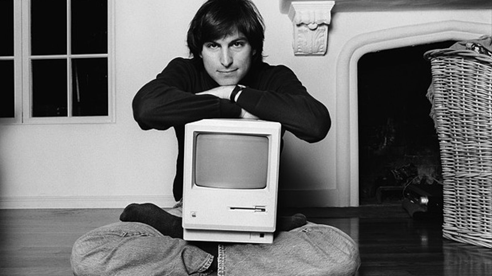

Steve Jobs
The man who loved innovation

Steve Jobs in his 20's with early version of Macintosh
Here's a time-line of Steve Job's life:
- 1955 - Steven Jobs was born February 24, 1955, in San Francisco, California.
- 1972 - After graduating from high school in 1972, Jobs attended Reed College in Portland, Oregon, for two years. He dropped out after one semester to visit India and study eastern religions in the summer of 1974.
- 1975 - In 1975 Jobs joined a group known as the Homebrew Computer Club. One member, a technical whiz named Steve Wozniak, was trying to build a computer.
- 1976 - In 1976 he and Wozniak formed their own company. They called it Apple Computer Company, in memory of a happy summer Jobs had spent picking apples. They raised $1,300 in startup money by selling Jobs's microbus and Wozniak's calculator.
- 1984 - In 1984 Apple introduced a revolutionary new model, the Macintosh. The on-screen display had small pictures called icons.
- 1985 - The failure of the Macintosh signaled the beginning of Jobs's downfall at Apple. Jobs resigned in 1985 from the company he had helped found, though he retained his title as chairman of its board of directors.
- 1996 - In a February 1996 Time magazine article, Jobs said, "The thing that drives me and my colleagues … is that you see something very compelling to you, and you don't quite know how to get it, but you know, sometimes intuitively, it's within your grasp. And it's worth putting in years of your life to make it come into existence." Jobs has worked hard to translate his ideas into exciting and innovative products for businesses and consumers.
- 1997 - In November 1997 Jobs announced Apple would sell computers directly to users over the Internet and by telephone. The Apple Store became a runaway success. Within a week it was the third-largest e-commerce site on the Internet. In September of 1997 Jobs was named interim CEO of Apple.
- 2005 - Steve Jobs with his Apple team began work on the first iPhone in 2005 and the first iPhone was released on June 29, 2007. The iPhone created such a sensation that a survey indicated six out of ten Americans were aware of its release. Time declared it "Invention of the Year" for 2007.
- 2011 - Jobs died at his Palo Alto, California home around 3 p.m. (PDT) on October 5, 2011, due to complications from a relapse of his previously treated islet-cell pancreatic neuroendocrine tumor,which resulted in respiratory arrest.
I was lucky to get into computers when it was a very young and idealistic industry. There weren't many degrees offered in computer science, so people in computers were brilliant people from mathematics, physics, music, zoology, whatever. They loved it, and no one was really in it for the money... There are people around here who start companies just to make money, but the great companies, well, that's not what they're about." —Steve Jobs